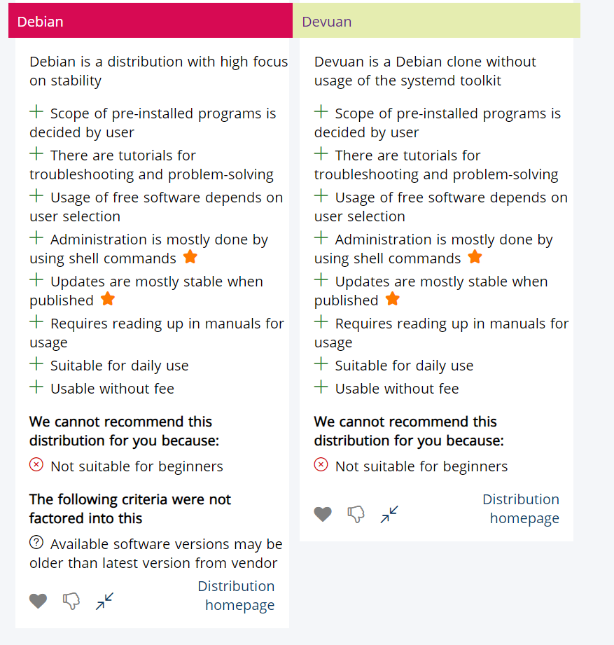
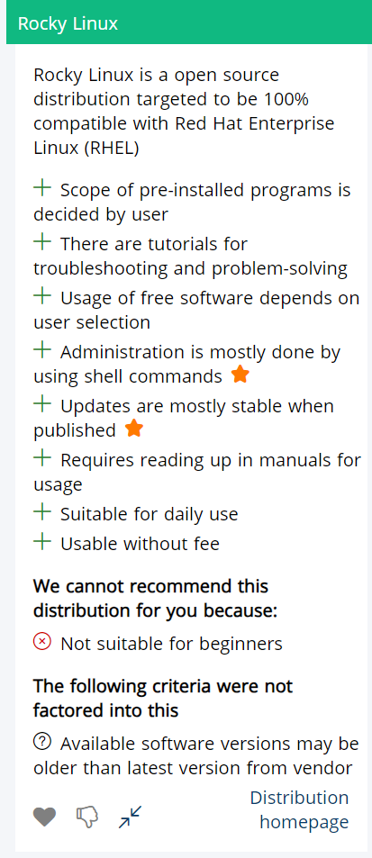
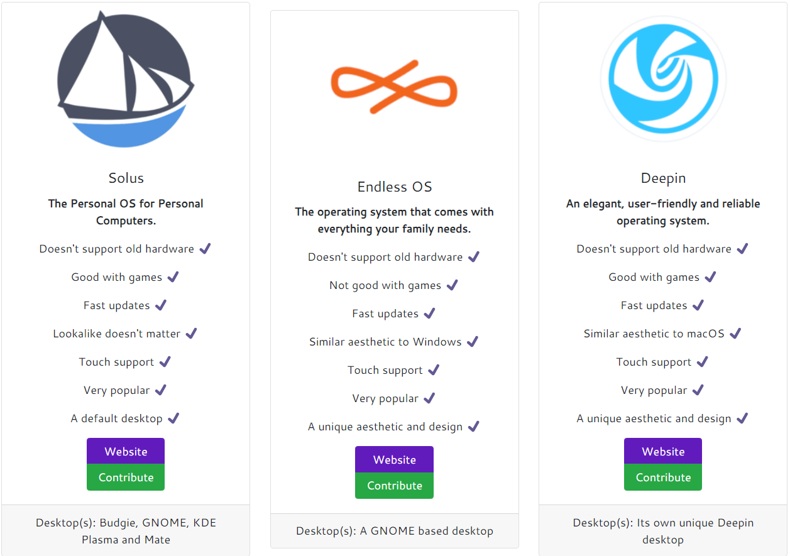

Tehtävä 1.1 Linux yleensä
Tästä pääset takaisin
Mitä jakelupaketti suosittelu minulle?
Distrochooser
Librehunt
Ensimmäinen oli
Distrochooser
Sen top 3 minulle olivat Debian, Devuan ja Rocky Linux

Toiseksi oli
Librehunt
Sen top 3 minulle olivat Solus, Endless OS ja Deepin
